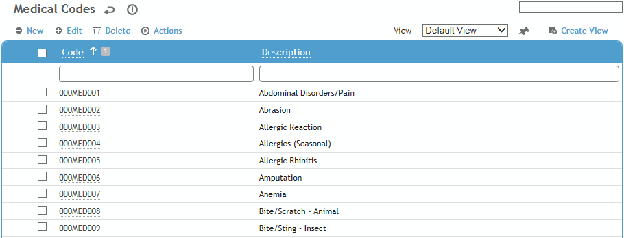
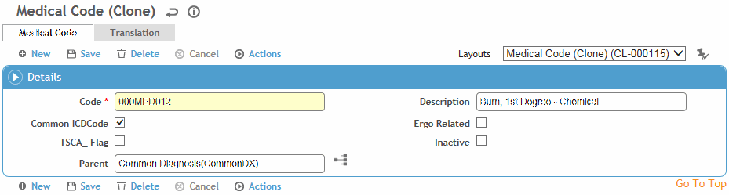

This table is used to store medical diagnoses and codes that appear in the Medical Codes search list. Because of the large number of available diagnoses, you can flag the diagnoses you most commonly use as Common ICD Codes and the diagnoses you do not use as Inactive. The Medical Codes Search list can be filtered based on these flags, and is available for you to choose from whenever you enter an employee diagnosis (for example, in the Clinic Visits module).
To filter the list of records, enter a few characters in one or more of the fields at the top followed by an asterisk, then press Enter.

Click a link to edit, or click New.
A medical code record cannot be edited if it is currently in use in employee or other related records.

Enter a Code and Description.
Indicate whether you want this diagnosis to appear in the list of Common ICD Codes.
Indicate if this code is Ergo Related. This will populate an Ergonomic checkbox on the Clinic Visit Details tab.
Indicate if this code is Toxic Substances Control Act-related (TSCA). When this code is selected a message will appear reminding the user to check the SDS sheet and consider creating a TSCA Questionnaire.
Click Save.